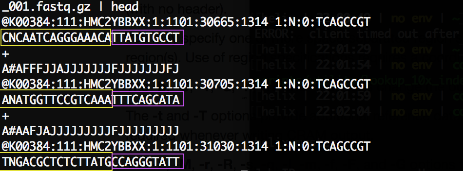
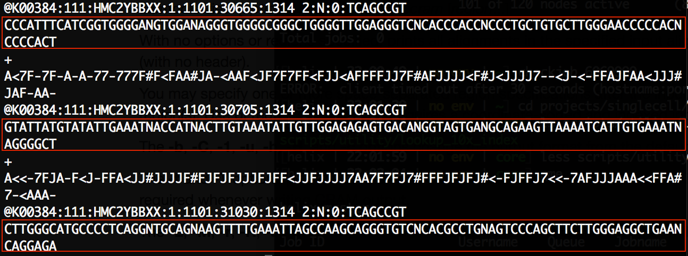
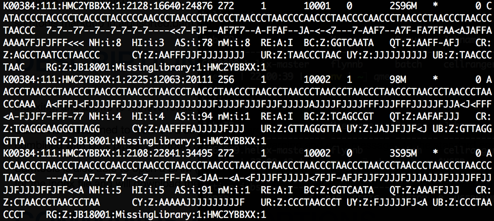

Single cell biology:
Studying every cell
What is a cell?
“The cell is the most basic unit of life”
-Theodor Schwann

Early recognition of different functional cell types
Retina (neuronal theory) by Ramon y Cajal 1852 - 1934

Many cell types were simply identified by looking under a microscope and looking at morphology. Technological advances in microscopes made this easier and faster.
Up until recently, it was difficult or impossible to classify even modest numbers of cells by anything other than cell surface markers or observed functions.
Advances in sequencing afford the ability to now look at transcriptional activity of many cells at a time.
Experimental methods to generate scRNA-seq data:
- CEL-seq (1,2)
- Drop-seq
- InDrop
- MARS
- SCRB
- Smart-seq (1,2)
- SMARter
- 10X-Chromium
Accuracy of different approaches

Sensitivity of different approaches

10X Genomics

Microfluidics enables us to capture each cell and look at all the genes
Our goal today:
Until 6 years ago, we only had the ability to profile a tissue as bulk.
But now we can examine each piece individually.
Analogy from Hyun Min Kang, UMichigan, 2018
Bioinformatics
Reads -> Matrix -> Insights
Reads -> Matrix
CellRanger Pipeline

Read 1: Cell barcode UMI

Read 2: Transcript specific read

BAM: Alignment and transcript assignment

Summary stats

Summary stats

Expression matrix

Data is sparse - lots and lots of zeros

Single cell RNA-seq data is described as a Zero-Inflated negative binomal distribution

In comparison to a bulk RNA-seq distribution

Dropout rates
These models introduce a new parameter dd , for the dropout rate, to the negative binomial model. The dropout rate of a gene is strongly correlated with the mean expression of the gene.
Detection Probability

Matrix -> Insights
The primary goal of every single cell experiment is to describe the heterogeneity of cell types present in the starting tissue population.
Challenges
Exponential growth of new methodologies to generate, process, and analysis scRNA-seq data.
Many methods rely on heuristics or empirical results, and lack proper validation with existing methods.
9/10 Analysts agree
The majority of analysis methods roughly agree with the following pipeline:
- Filtering low quality cells
- Filtering really sparsely expressed genes
- Normalize gene expression
- Feature selection for clustering
- Dimensionality reduction
- Cluster identification
- Marker gene identification
- Cell type inference
Analysis Challenges
How to...- discriminate lowly expressing cells from ambient mRNA?
- reliably call expressed genes?
- cluster cells without bias?
- id cell types without clustering?
- infer celltypes from marker genes? without biological insight?
Philosphical Challenges
- How to define a "cell type"?
- Do cells that cluster together always belong to the same "type"?
Let's dive in!
Let's open the e-notebooks and make sure you have everything you need
Each of you has an Amazon EC2 cloud instance with Jupyter notebooks running Python3 kernels
Analysis details (optional)
Differential Expression (DE) analysis
Every analyses with analyzing bulk RNA-seq data eventually involves to identifying differentially expressed genes between experimental conditions. Many methods, e.g. DESeq2 and edgeR, have been developed for bulk RNA-seq. These algorithms although not ideal for single cell RNA-seq data can still provide robust results.
Some of the many algorithms are listed here for reference:
- edgeR
- DESeq2
- KS
- Mann whitney U
- T-test
- SCDE - specifically for single cell
- T-test
- AUROC
- And many more
Marker genes
Plp1, Cldn11, Ugt8a, Sirt2, Mag, Mobp, Cnp, Mbp, Cck, Pcp4, Nap1l5, Meg3, Gap43, Rgs5, Itm2a, Tmsb4x, Slc16a1, Igfbp7, Hbb-bt, Hbb-bs, Bsg, Klf2, Junb, Hba-a1, Hba-a2, Sparc, Ctla2a, Cldn5, Dbi, Atp1a2, Slc1a2, Cst3, Fabp5, Plpp3, Id3, Sparcl1, Ptn, Apoe, Gja1, Fabp7, Cpe, Mt3, Mt1, Ndrg2, Clu, Aldoc, Id2, Ckb, Pla2g7, Aqp4, Col3a1, Igfbp2, Ptgds, S100a6, Col1a2, Ptn, Cxcl12, Nupr1, Igf2, Dcn, Lum, Col4a1, Klf2, Junb, Sparc, Vtn, Col1a1, Lgals1, Apod, Fcer1g, B2m, Cst3, Tmsb4x, P2ry12, Ctss, C1qb, C1qc , C1qa, Tyrobp, Ftl1, Ctsd, Junb, Ccl2, Ccl7, Ccl12, Ccl3 , Ccl4, Cd83, Hexb, Rps29, Lgmn, Sepp1
Cell type inference
- Fabp7 (BLBP) - astrocytes
- Pcp4 - Purkinje neurons
CellView
A web application to
visualize
and explore single cell RNA-seq data.
spl.write_rds(cpt, feature_data, cluster_data)
Download Data.Rds and we will upload to this website:
https://mbolisetty.shinyapps.io/CellView
Or if within the JAX network:
http://ctshiny01.jax.org/flynnb/CellView/
2,300,000 and counting
Other resources
Acknowledgments
- Sandeep Namburi - Research IT
- Aditya Kovuri - Research IT
- Mohan Bolisetty - Single cell
- Paul Robson - Single cell
- Mike Samuels - Single cell
- Genome Technologies
Questions?
email me:
bill.flynn@jax.org